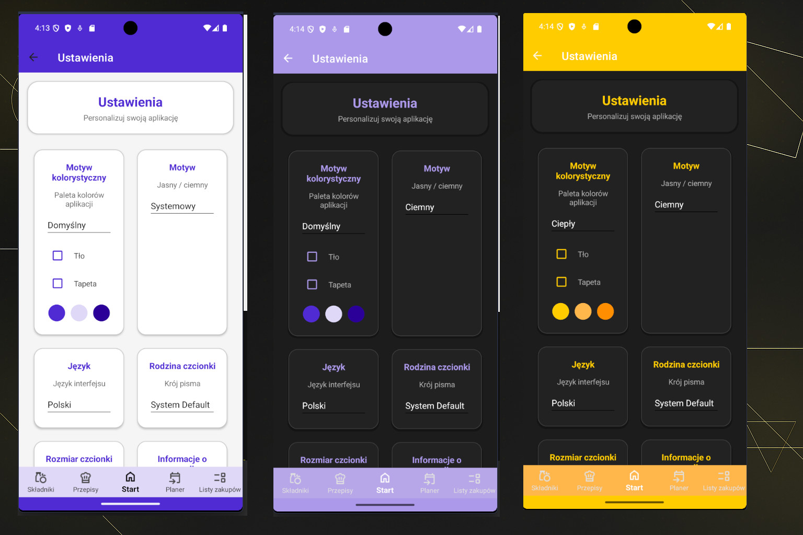
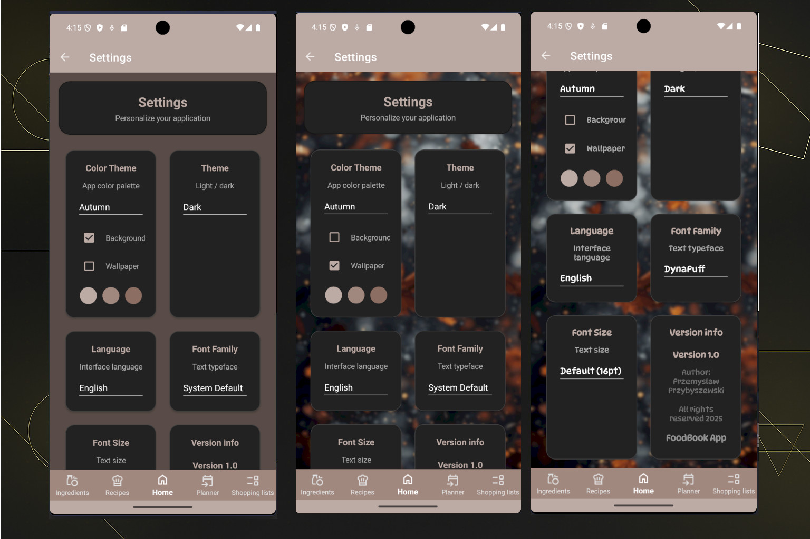

Foodbook App
Foodbook App




Cel aplikacji
Kompleksowa aplikacja mobilna do zarządzania przepisami, planowania posiłków i tworzenia list zakupów. Umożliwia import przepisów z internetu, automatyczne obliczanie wartości odżywczych, synchronizację danych z chmurą Supabase oraz pełną personalizację wyglądu. Zbudowana w .NET MAUI 9 z lokalną bazą SQLite i Entity Framework Core. Zawiera testy jednostkowe xUnit oraz wielojęzyczny interfejs (PL, EN, DE, ES, FR, KO).
Technologie
C#
.NET MAUI
.NET 9
SQLite
Entity Framework Core
Supabase
MVVM
XAML
xUnit
Plan rozwoju
- Zarządzanie przepisami (CRUD, import z URL)
- Baza składników z wartościami odżywczymi
- Planer posiłków (zakres dat, liczba porcji)
- Automatyczne listy zakupów
- Foldery i etykiety przepisów (drag & drop)
- Konto użytkownika (Supabase Auth, JWT)
- Synchronizacja z chmurą (Supabase)
- Archiwizacja i eksport/import danych
- Wielojęzyczny interfejs (PL, EN, DE, ES, FR, KO)
- Testy jednostkowe (xUnit)
- Powiadomienia o posiłkach
- Udostępnianie przepisów
- Skaner kodów kreskowych
- Widżety na ekran główny